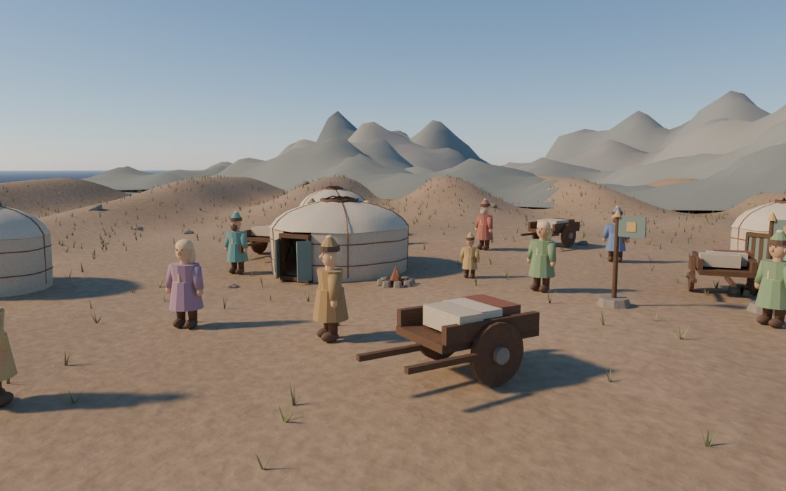

1723XVIII ҒАСЫР
Көштің соңғы арбасы
Жолда қалған отбасыға су, арба және паналайтын орын керек. Кімге алдымен көмектесетініңді таңда да, соңғы топты ықтасынға жеткіз.
Жолда қалған отбасыға су, арба және паналайтын орын керек. Кімге алдымен көмектесетініңді таңда да, соңғы топты ықтасынға жеткіз.
Алдымен деректі оқу ↓
3D КӨРІНІСБосқыншылықтың адамдарға әсерін және көшке қажет үш нәрсені түсіндір.
Оқу әдебиетінде 1723 жылғы жоңғар шапқыншылығы елдің көп бөлігін қоныс аударуға мәжбүр еткен кезең ретінде сипатталады.
Қазақ руларының бір бөлігі Сырдария мен Орта Азияға қарай ығысты. Босқыншылық күнделікті тұрмыс пен шаруашылықты ауырлатты.
«Ақтабан шұбырынды, Алқакөл сұлама» атауы осы ауыр босқыншылықты білдіреді.
Жолда қалған отбасыға су, арба және паналайтын орын керек. Кімге алдымен көмектесетініңді таңда да, соңғы топты ықтасынға жеткіз.
Төрт тапсырма арқылы оқиға мен оның тарихи мағынасын түсінгеніңді тексер.
Босқыншылықтағы адамдар қандай қиындықтарға тап болды? Ойыннан бір мысал келтіріп, оны тарихи дерекпен байланыстыр.
Жазба осы браузерде сақталады.